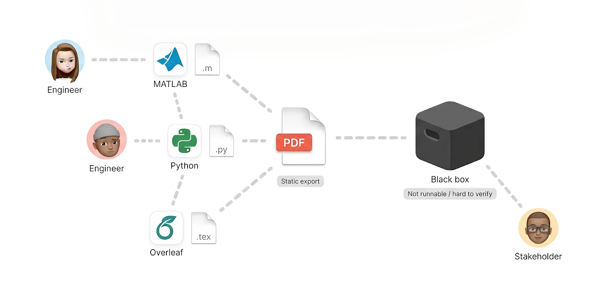
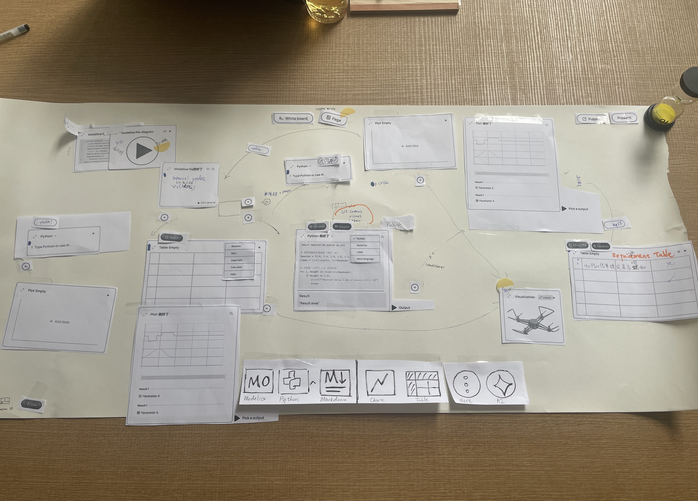
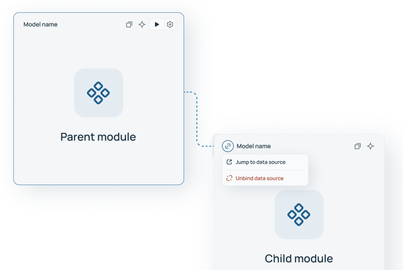
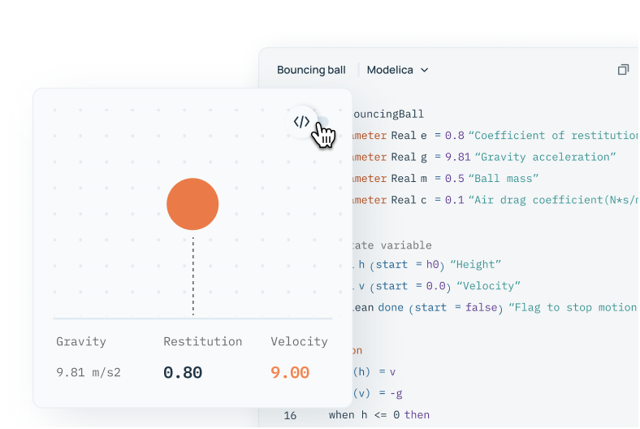
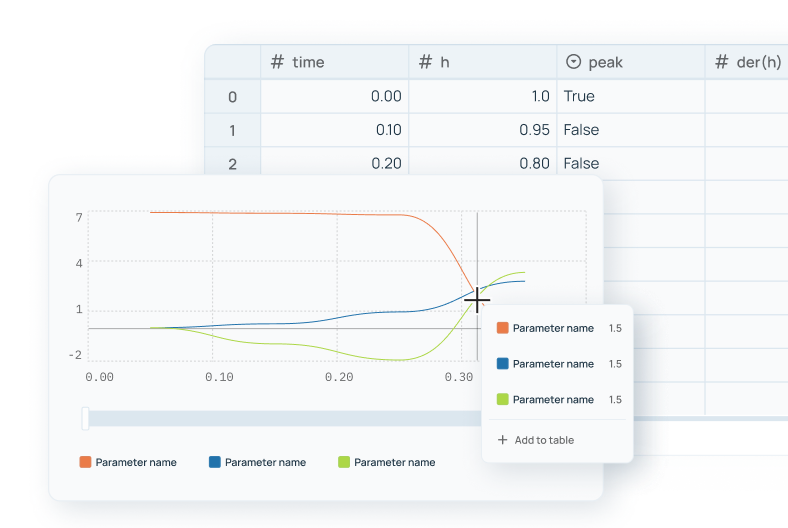
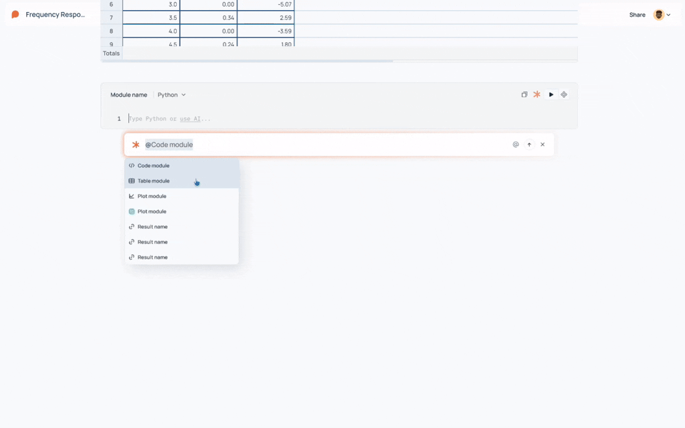
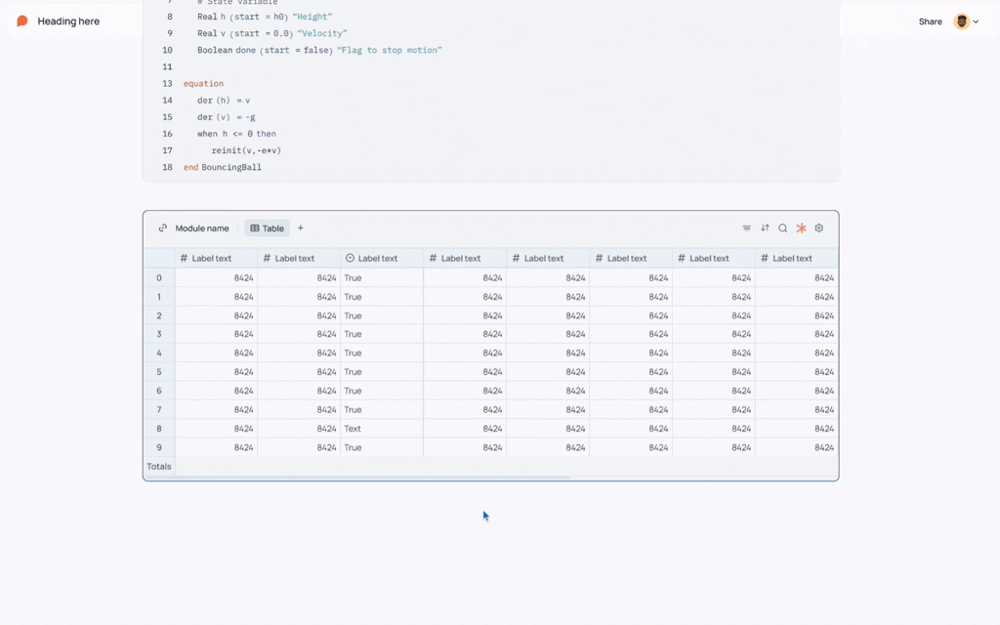

ODE-Paper
Interactive Analysis Notebook for Engineers
(brief)
Built 0→1 modular system unifying code, parameters, and visualization into dynamic documents.
Built 0→1 modular system unifying code, parameters, and visualization into dynamic documents.
Engineers writing technical reports constantly switch between tools, leading to:
The authoring process is fragmented across disconnected environments.
When engineering papers can't be run, verified, or interacted with, they become black boxes.

Unified environment where writing = analysis = presentation. What's delivered isn't a static report, but an explorable, reproducible interactive document.
To define the product scope and clarify core requirements, I organized a workshop with the team using physical cards to simulate real user workflows.

Engineers pull data from different places — models from ODE simulation apps, code, external table files — and combine them into analysis workflows.
The value lies in traceability. Changing a parameter should automatically update the referencing code and downstream plots.
All modules share consistent behaviors for fast editing and connect through parent-child binding for data traceability.

Run simulations and analysis in-notebook. Switch between text and visual views for clearer model understanding.

Inspect and validate results in Table. Explore patterns and comparisons in Plot. Switch views while keeping same source.


Trigger AI from the Outline while browsing. Call out a specific module and run targeted "Suggest" commands in context.

Generate runnable code directly inside Code modules. Also supports quick edits like fixing errors and refactoring.

From a current result, ask a question and instantly add the next module to continue the analysis.
Since then, we've welcomed ODE Believers from institutions including:
Viewer-side AI: enabling readers to ask questions and explore results interactively — turning static consumption into active investigation.
"The goal isn't smarter AI — it's clearer workflows where human insight and machine speed work in tandem."